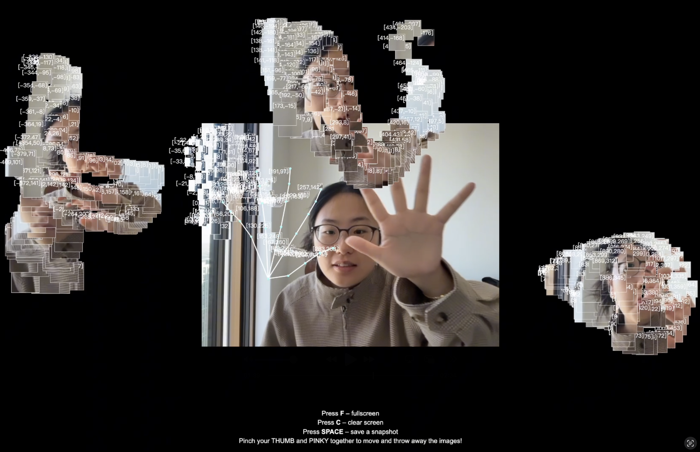
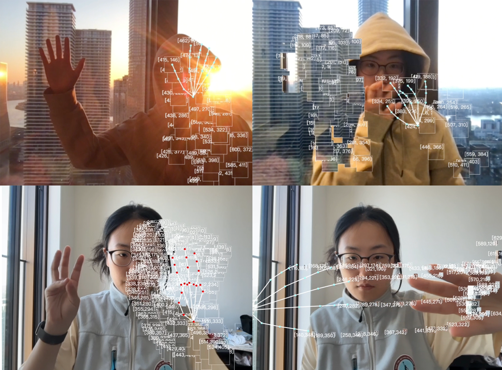

Electric Touch
What does it mean to touch in a world where contact is purely visual?
Electric Touch is a browser-based interactive installation that responds to a single hand tracked through the webcam. Pinching and dragging gestures let users pick up floating pixel blocks sampled in real time from their own fingertips, which then drift, pause, and vanish from the screen. The hand-tracking data is intentionally mirrored, creating an illusory hand that mimics but resists the user's own, turning a seemingly simple act of touching into a negotiation between vision and imagination.
The work sits in the blur between signal and sense, between the body and its double, asking what becomes of intimacy, friction, and contact when only vision remains.

